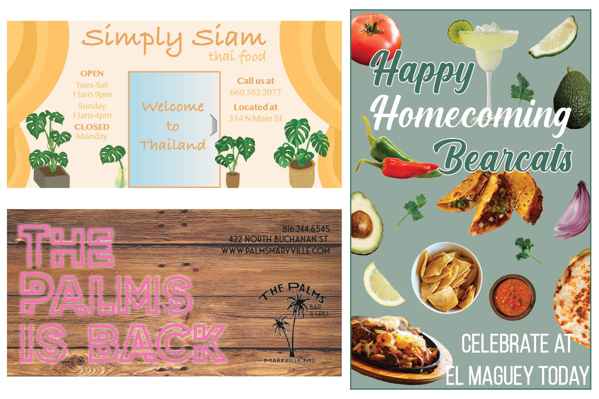
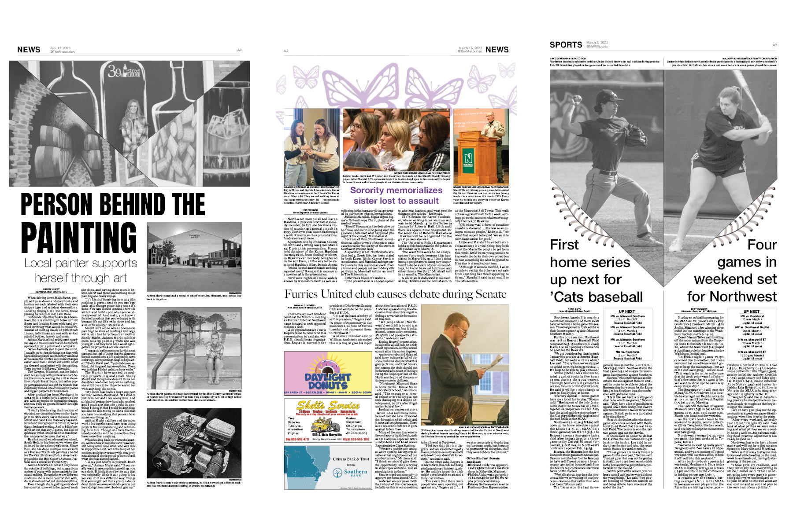

View My Past Work Here
Advertising Designs
While working as an Ad Designer, I have created many ads for businesses located in the Maryville area. The three shown above are for the businesses Simply Siam, The Palms, and El Maguey.These are all spec ads that I created in order for our account executives to show to the business and sell to them.
Newspaper Designs
Northwest offers practicum courses to provide on-hands experience for students. While taking Journalism Practicum, I worked as a designer for the newspaper and designed pages for print. Each week I would be assigned new pages. The ones shown above were printed during the Spring 2023 semester.
Photography
Photography has been a big inspiration within my life and interests. I started by only taking landscape and nature shots of everything around me. Then, I worked up to taking pictures for friends and family members. Since then, I have taken on clients and provide a variety of services, including portraits and live events.